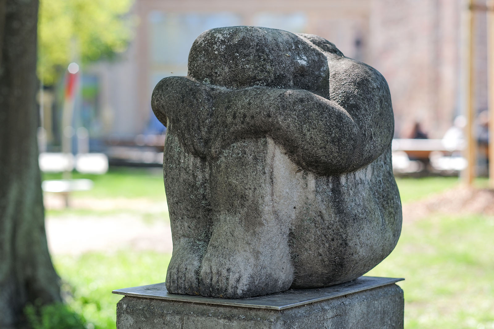
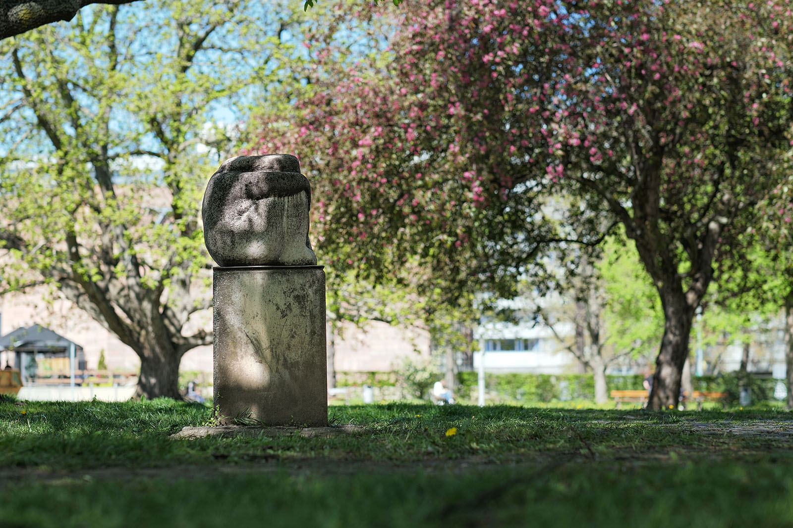
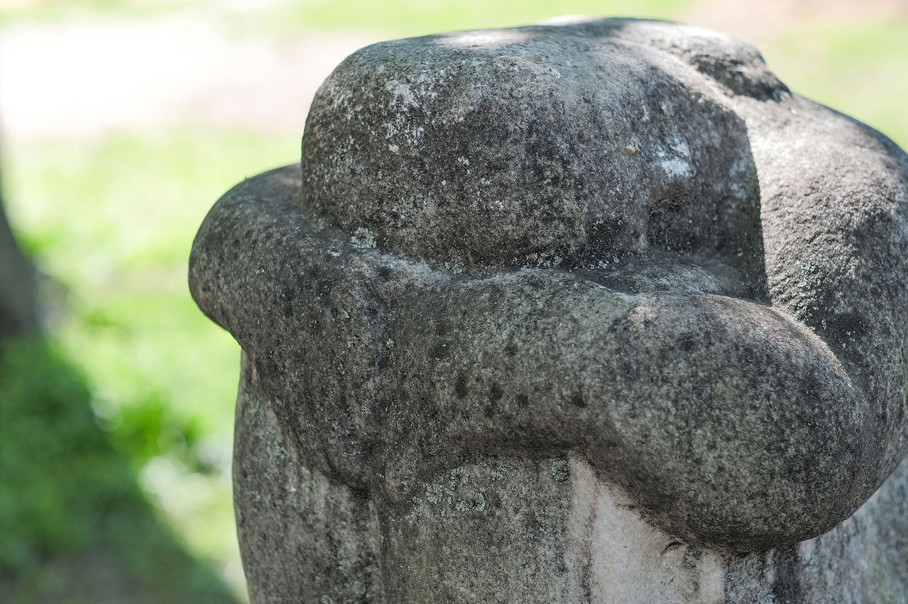
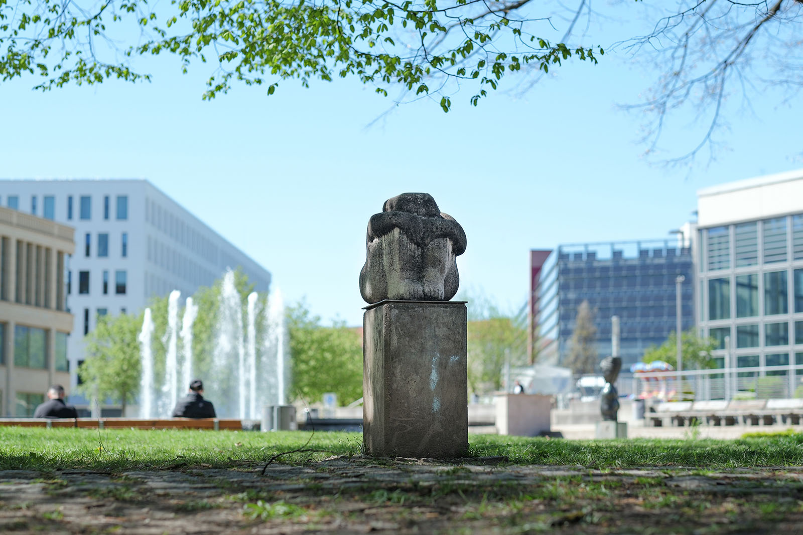

Recherche und Werkbeschreibung: Roman Pilz. Fotografien: Frank Krüger. Text und Bild wechseln sich wie in einem Magazin ab. Ein Klick auf ein Bild öffnet die Großansicht.
Die "Sinnende" von Berthold Dietz wurde 1974 im Stadthallenpark aufgestellt. In dem gärtnerisch und künstlerisch abwechslungsreich gestalteten Areal setzt die Figur einen Kontrapunkt zu den wesentlich prominenteren Facetten dieses lebendigen Begegnungsortes im Chemnitzer Zentrum. Hier wird nicht der neue sozialistische Mensch, die Gemeinschaft, die Familie oder die Lebensfreude an sich gefeiert – auch dem Individuum auf der Suche nach Ruhe, Geborgenheit und Introspektion wird unter Bäumen ein Platz eingeräumt.
Berthold Dietz wurde 1935 in Zwickau geboren und verstarb 2023. Sein Wirkungsort war seit 1960 Lichtentanne im Landkreis Zwickau. Dietz machte zunächst zwischen 1949 und 1954 eine Ausbildung zum Steinmetz und Bildhauer.
Von 1952 bis 1955 nahm er Unterricht bei Karl Michel in der Mal- und Zeichenschule Zwickau. Diese Schule wurde 1948 von Karl-Heinz Schuster und Michel gegründet und konnte bis 1963 ungewöhnlich unabhängig vom DDR-Bildungssystem wirken. Sie brachte zahlreiche wichtige Künstler hervor.
Dietz studierte anschließend von 1955 bis 1960 bei Walter Arnold, Gerd Jaeger und Hans Steger an der Hochschule für Bildende Künste Dresden das Fach Plastik. 1960 ließ er sich in Lichtentanne nieder und arbeitet seitdem als freischaffender Bildhauer. Ab 1964 war Dietz Leiter des Plastikzirkels Lichtentanne.
Er war von 1964 bis 1990 Mitglied im Verband Bildender Künstler der DDR und anschließend im Bundesverband Bildender Künstlerinnen und Künstler und im Chemnitzer Künstlerbund organisiert. Bereits 1958 wurde der junge Künstler mit dem als Förderpreis konzipierten Max-Pechstein-Preis der Stadt Zwickau ausgezeichnet. 1995 erhielt er den 1.
Preis „Kunst am Bau“ in Hoyerswerda. Seine Arbeiten wurden seit Anfang der 1960er Jahre regelmäßig ausgestellt. Der Bildhauer arbeitete vor allem figürlich.
Er schuf Plastiken und Reliefs für öffentliche Bauten und Plätze. Neben der Darstellung des Menschen bildete er auch Tiere und christliche Themen in Bronze, Stein, Holz, Terrakotta und Beton ab. In Chemnitz sind jeweils eine Figur im Inneren und auf dem Außengelände des Stadthallenkomplexes zu sehen.
In den Kunstsammlungen befindet sich eine seiner ersten Auftragsarbeiten (Der rufende Pionier). Vor allem in der Region Zwickau sind noch zahlreiche weitere Arbeiten des Künstlers prägend für den öffentlichen Raum, beispielsweise der Kinderreigen vor dem Gewandhaus, der Tuchmacherbrunnen und das Trabidenkmal am August-Horch-Museum.
Die weibliche Figur hockt zusammengekauert auf einem Podest, das sie dem Betrachter etwa auf Hüfthöhe präsentiert. Geht man von einer bewussten Positionierung der Sinnenden im Park aus, so kann man sagen, sie wendet sich vom Ort des lauten Trubels ab. Sie weist dem lauten Brunnen, der im Sommer von badenden Kindern bespielt wird, und dem Kulturhaus mit seinen Bühnen und Gaststätten den Rücken.
Die Gestalt geht zwar von einer realistischen Darstellungsweise aus, bietet aber durch ihre kompakte, zusammengerückte Haltung wenige individuelle Merkmale. Die Formen der Gliedmaßen sind geglättet, gerundet und vereinfacht. Der kolumbianische Künstler Fernando Botero kommt einem in den Sinn. Das Gesicht der Frau liegt verborgen im Schoß, zwischen den angezogenen Knien und den Armen, die diese umschließen. Eng stehen die Füße am weiblich gerundeten Gesäß, dicht presst sich die Brust zwischen Hüfte, Oberschenkel und Schulter, nah am Körper führt sie die Arme und fließen die langen Haare hinten, über den Nacken und Rücken.

Die akademische Gattung des weiblichen Aktes wird von Künstlern, oft mit dem Motiv der geistigen Einkehr verbunden – Wilhelm Lehmbruck schuf kurz vor dem 1. Weltkrieg wohl die in Deutschland bekannteste Ausgestaltung dieser "Sinnenden". Die sitzende Pose mit geneigtem, typischerweise in die Hand gestütztem Kopf ist die konventionelle Ausgestaltung dieses Themas. Dietz entwirft seine Skulptur in dieser Hinsicht ungewöhnlich – vielleicht auch mit bewusster Mehrdeutigkeit.

Da das Gesicht der Figur nicht lesbar ist, sondern ganz im Marmorstein verbleibt, kann der Betrachter die Haltung durchaus auch als Pose der Müdigkeit, der Kümmernis und der Isolation deuten – mitten in Chemnitz, auf grüner Wiese und zwischen buntem Treiben! Mancher kann das im Kontext des Entstehungszeitpunktes zu DDR-Zeiten auch als subversiv deuten.

